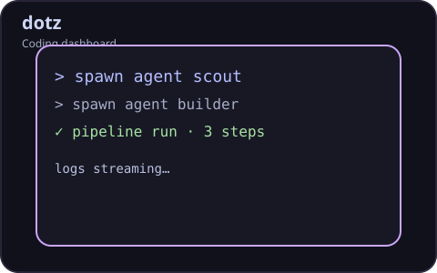
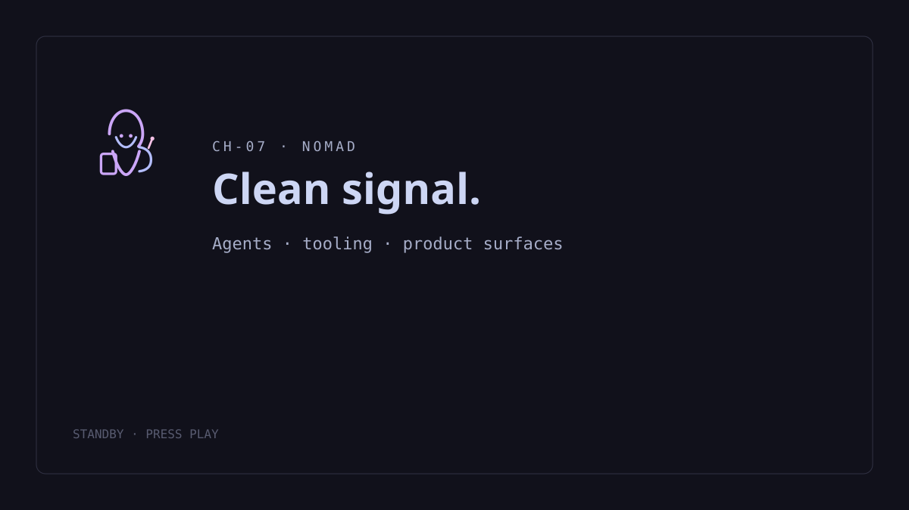
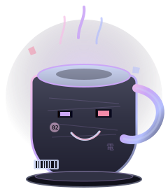
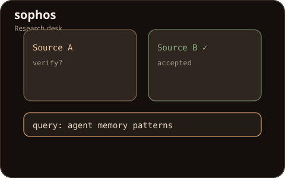
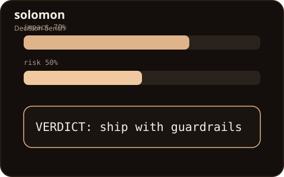
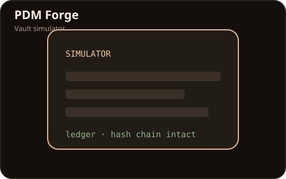
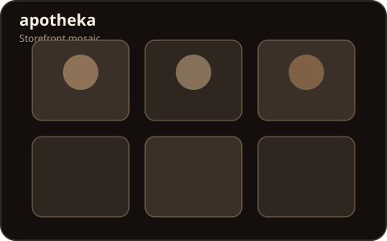

Demo · agent runtime
dotz — agent console
Spawn agents, run a fake pipeline, watch the log. Flagship runtime energy in a pocket UI.
Agents: 0 · Pipeline idle
$ ready — spawn an agent to begin

Five beats: spawn agents → research → decide → vault gate → storefront. The hero is a real MP4 reel — scroll scrubs the timeline; reduced-motion keeps the poster and a paused first frame.
Real controls — state changes on this page. Touch-friendly at 390px. Demos are labeled; they are not live production systems.

Spawn agents, run a fake pipeline, watch the log. Flagship runtime energy in a pocket UI.
Agents: 0 · Pipeline idle
$ ready — spawn an agent to begin
Ask a query, get sourced cards, verify or reject each claim. Discipline over vibes.
No cards yet — run a query.

Pick a scenario, weigh impact vs risk, get a structured verdict.

Toy check-in / gate / ledger. Explicitly a simulator — not a live vault.
$ SIMULATOR ready
Filter and browse a miniature catalog mosaic. Product-surface craft, not a live shop.
Showing all items
Repos and case study — equal card weight, unequal ambition. Open anything you want to verify.
Flagship agent runtime and workflow tooling — reliability, clear interfaces, clone-to-first-run path.
Research-oriented agent stack with sourcing and verification built into the loop.
Systems and decision tooling — structured judgment where vague automation usually fails.
Governed vault-simulator pipeline — constraints, gate, ledger, and a written case study.